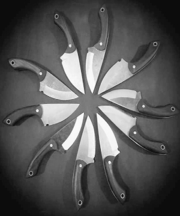
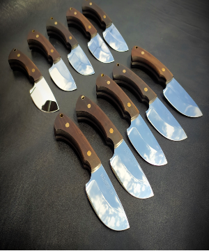

Dobrodošli u HandmadeKnife
O nama

Oštrenje kuhinjskih, mesarskih, lovačkih nozeva, kao i rucna izrada noževa po želji su naša strast. Pored izrade i ostrenja nozeva, HandmadeKnife se bavi izradom kožnih predmeta i futrola za noževe.